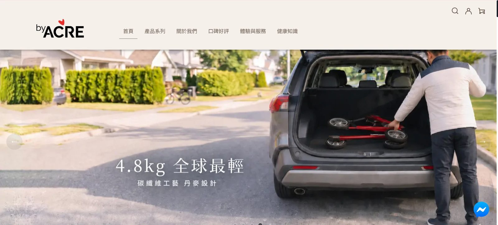
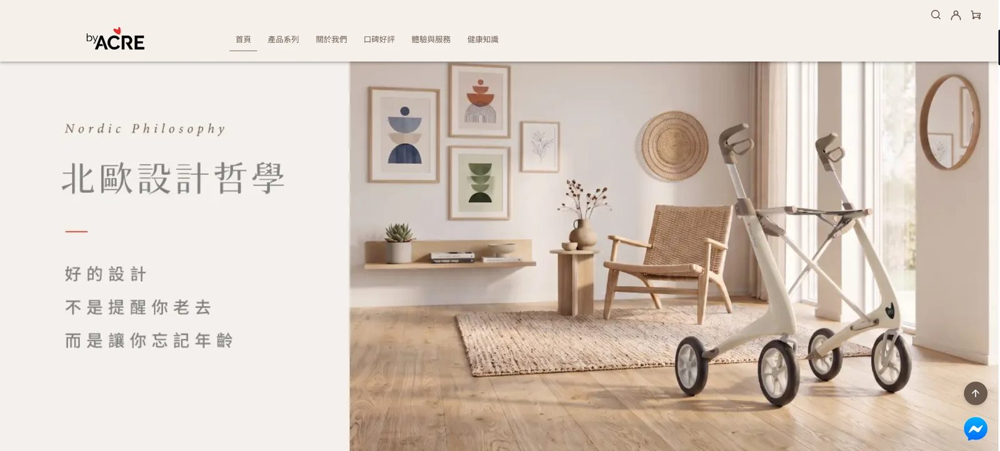

The brand
byACRE is a Danish brand that designs rollators with a carbon fiber frame.
- Carbon Ultralight, 4.8 kg, folds flat
- Red Dot Design Award, 2019
Working within limits
ShowMore has no custom code, so the site could only be shaped through each template's image slots. I tested every template and wrote down the size of each image slot. I gave the sizes to the designers, who made the images, and I placed them on the site.
- TestTry each template and find its image slots.
- RecordWrite down the size of every slot.
- BriefHand the sizes to the designers.
- PlaceUpload their images to the site.
Feedback
The client and ShowMore's own team both gave very positive feedback. ShowMore's team said they did not know a site on their platform could look this good.
Visit the site →The site


Screens are in the site's own language, Traditional Chinese. Select an image to see it full size.